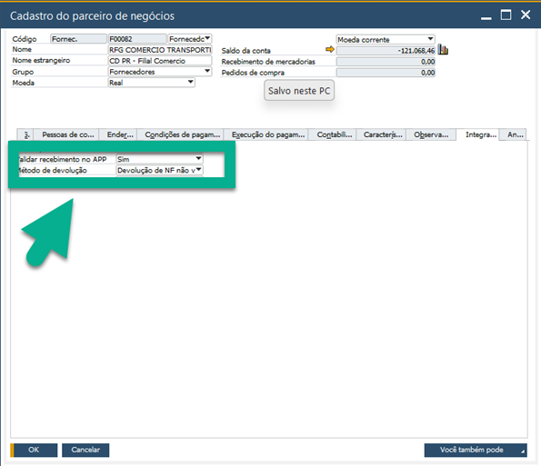
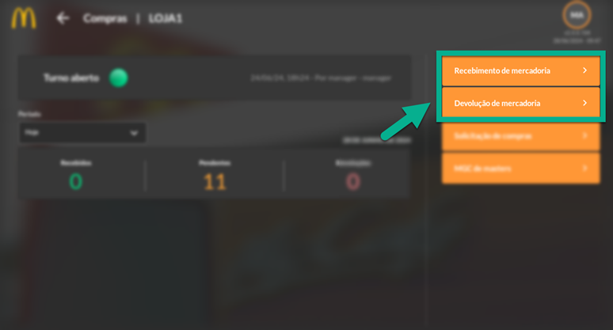
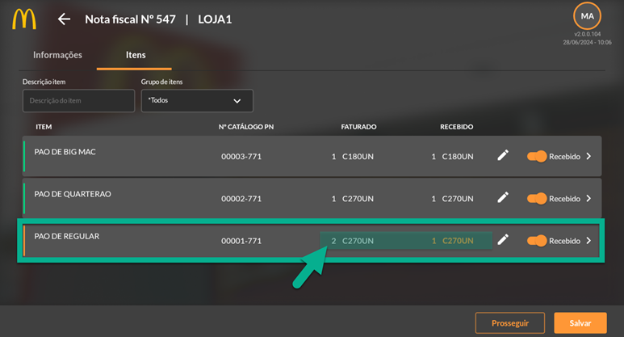
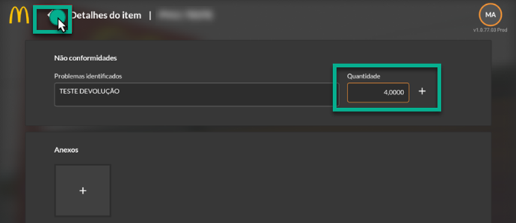
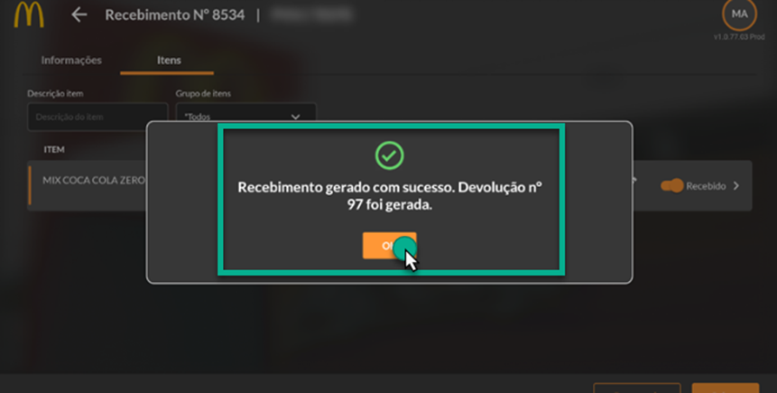
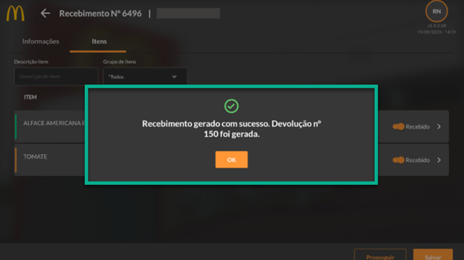
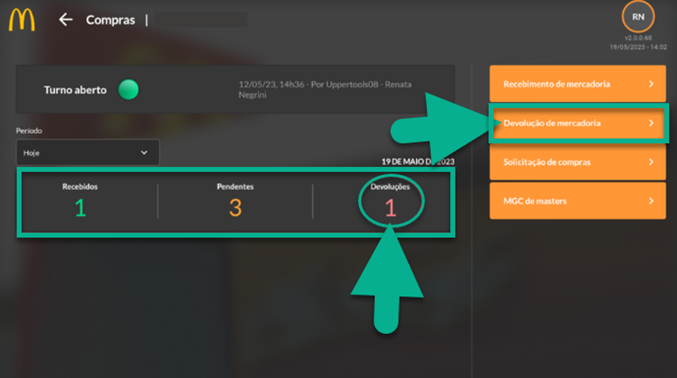
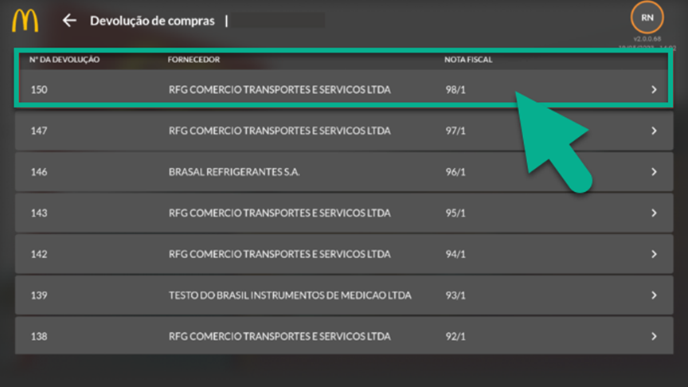
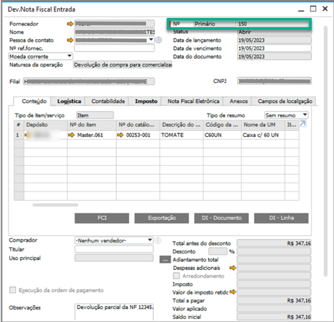

Devolução de Mercadorias
O processo de devolução de mercadoria tem como objetivo a realização do processo diretamente pelo aplicativo, gerando de forma automática uma Nota Fiscal de Saída.
Para que o processo ocorra de forma automática, é necessário que algumas parametrizações sejam feitas. Certifique-se de que as criações de impostos e parametrizações estejam realizadas de forma correta no SAP.
Configurações BROne Franquias
Verifique as configurações por final do BROne Franquias na aba compras. Importante também que os impostos estejam parametrizados para a utilização “Devolução”.
Configurações Parceiro de Negócios
Verifique as configurações do Parceiro de Negócios na aba “Integração”.
O processo de devolução no aplicativo requer, primeiramente, a análise dos itens de recebimento, confrontando-os com a mercadoria recebida fisicamente. Assim, no caso de constatar com algum item danificado ou ausente, o APP possibilita indicação da irregularidade e, posteriormente a geração da nota fiscal de devolução. Veja abaixo o passo a passo desse processo.
 No exemplo, na NF estava a informação de 2cx de pão de regular. Porém, a loja constatou que uma das caixas estava danificada,sendo necessário realizar a devolução. Pelo app, informe o motivo do não recebimento dos itens totais da NF.
Para salvar a observação, clique no símbolo de “+”, e para voltar clique na seta do canto esquerdo e finalize o processo ao selecionar o botão “Prosseguir” no final da tela, e assim será gerado um recebimento.
Em conclusão, a funcionalidade analisada é projetada para facilitar o processo de recebimento de mercadorias e nota fiscal de entrada no sistema SAP. Independentemente da origem dos documentos de esboço, sejam eles manuais ou provenientes de algum add-on, a funcionalidade busca e exibe apenas os esboços correspondentes à filial logada.
Após os processos de conferência de mercadoria e feito um apontamento de diferença de itens recebidos, é feito automaticamente uma devolução de mercadoria no aplicativo e um documento de devolução de Nota Fiscal de Entrada, isso se todas as configurações necessárias estiverem corretas.
   